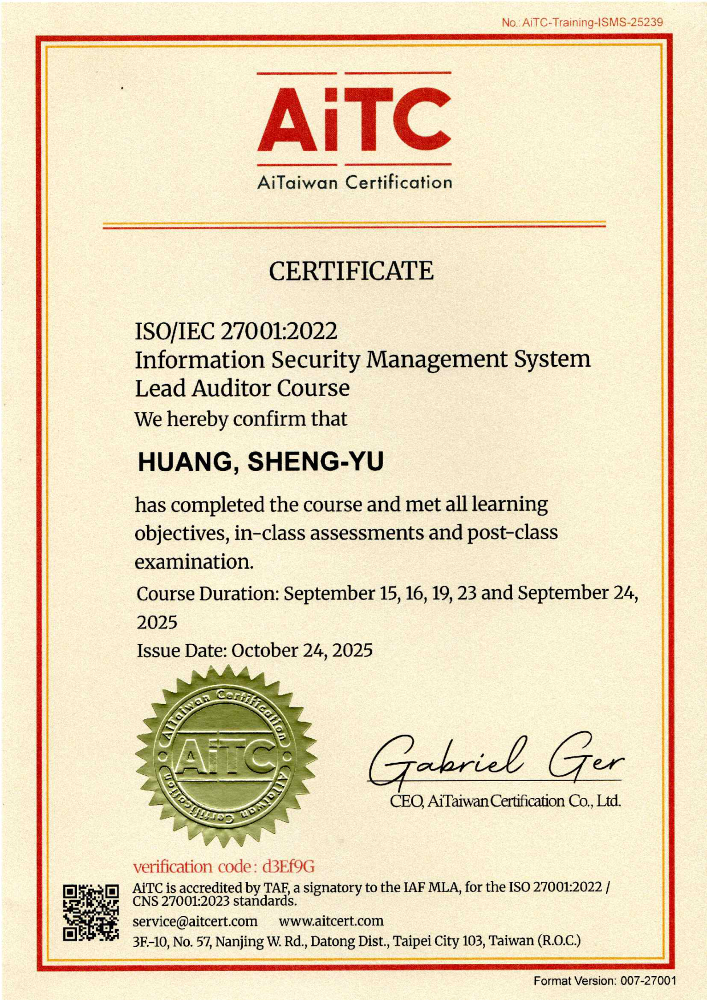
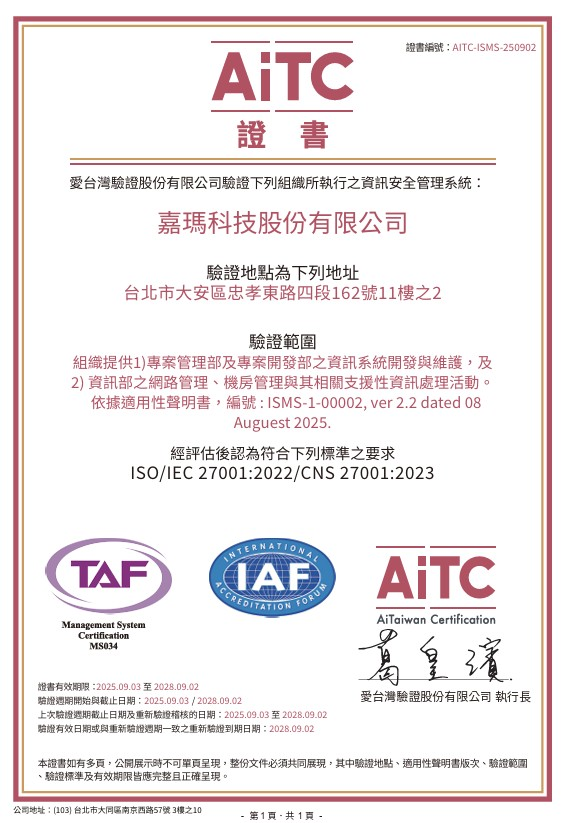
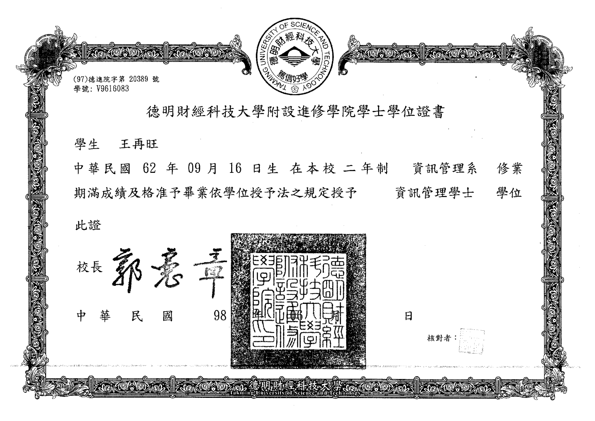
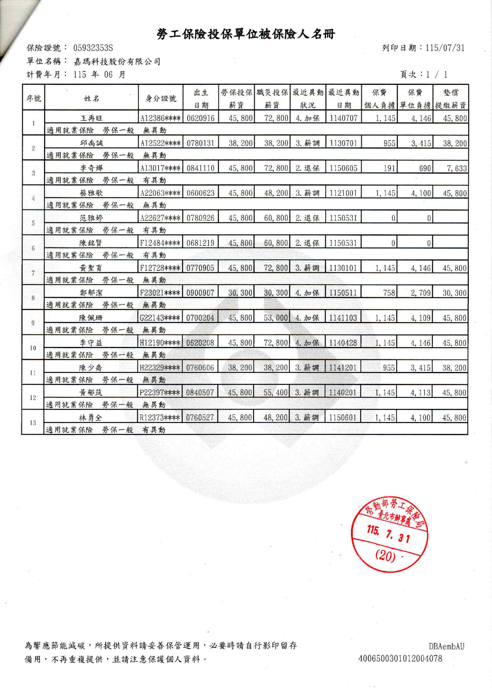

數位發展部數位產業署 AI 創新服務研發補助計畫 · 審查簡報
類別：■ AI 創新應用服務 □ AI 系統軟體／工具研發
Munea 沐寧：AI 健康陪伴照護 App 開發與
家庭與企業 ESG 場域應用服務計畫

UI 設計原型 · 開發中
數位發展部數位產業署 AI 創新服務研發補助計畫 · 審查簡報
類別：■ AI 創新應用服務 □ AI 系統軟體／工具研發
本簡報依官方範本製作：大綱與頁序未調整；背景設計依範本「※背景可自行設計※」規定自行設計。
| 序 | 委員書面意見（摘要） | 回覆說明 | 頁碼 |
|---|---|---|---|
| 1 | 以既有 iOS 版為基礎，新增 Android、營運後台及 AI 照護深化，三腦分工處理對話、記憶與安全 | 委員摘要正確。補充開發狀態：既有 iOS 為前期自籌之產品原型（開發調整中、不列入補助標的）；Android 版、營運後台與 AI 照護深化均為本計畫排定開發之未開發項，將依查核點（8／10／11 月三波）逐項完成並持續優化 | 10、11 |
| 2 | 建立醫療紅線、危機分級轉介、家庭權限分層與企業匿名彙總，規劃第三方檢測與 2–3 家場域試辦 | 委員摘要正確。醫療紅線、危機分級轉介、家庭權限分層與企業匿名彙總為本計畫安全架構之核心設計；第三方資安檢測與 2–3 家場域試辦為排定執行項目，分別列查核點 D2、E2 驗收 | 11、16、19 |
| 3 | 期程僅 3 個多月、工項多，且多數成果集中 11 月驗收 | 以前期自籌原型為基礎、非從零開始（後端／調度層／設計系統共用）；查核點分三波——8 月即有 5 個階段驗收、10 月 1 個、11 月 6 個；後台席次模組先行、後端測試雙人力備援 | 13、14、A1 |
| 4 | 心理支持約束層涉健康情緒危機，惟團隊未見心理／醫療／長照專業參與；查核點未設召回率等門檻 | 本服務定位為陪伴與照護輔助、非心理治療（約束層為對話分寸之設計方法論、醫療紅線一律導回專業人員）；專業參與由試辦場域之護理／照護專業人員承擔——參與使用者研究與試辦、回饋納入規則調校並留存紀錄；如委員認有必要，願配合延聘專業顧問（費用公司自籌） | R1 |
| 5 | 建議補充專業審閱機制，並將召回率、誤報率、紅線通過率、通知準確率、語音延遲、操作完成率納入驗收 | 遵照辦理——六項指標與門檻值已全數訂定（召回率 ≥85%、誤報率 ≤15%、醫療紅線 100%、通知準確率 ≥80%、延遲 P95 ≤3 秒、操作完成率 ≥75%；為結案保守承諾值、內部目標更高），簽約時反映於正式查核點 | R1 |
| 6 | 建議明確區分既有成果與新增內容，確認具名場域、試辦人數、使用者同意、600 人次與銷售額計算 | 既有／新增以 AS-IS→TO-BE 區分；場域洽談中、簽約前以用印意向書具名，每場域試辦 10–20 人、雙軌同意（App 內電子＋機構書面）；600 人次＝C 端啟用帳號＋B 端場域觸及，銷售額＝席次月費×席次數＋導入服務費 | 13、19、22 |
| 7 | App 公開上線前之第三方檢測等級為何，建議納入查核點 | 本 App 蒐集個資（含健康自量測數據），依「行動應用 App 基本資安檢測基準」擬以 L2 送測（若判定涉交易則依 L3 辦理）；檢測等級與通過證明明載於查核點 D2 | 16、R2 |
| 8 | 資安經費部分用於人事，請補充資安人力舉證資料（證照、論文、就業證明） | 對應人力為李守益（國立中央大學資工碩士、曾任資訊服務公司協理）與王再旺（資管系、系統整合與資安工程經歷）；學歷證明、在職（勞保）證明與證書正本掃描均已檢附於 R3 頁；投入工時紀錄按月留存隨查核提供 | R2、R3 |
| 9 | 未見網路資安防禦或檢測事宜，請補充並納入查核點 | 分兩層補充——既有：全程 TLS 1.3 加密、金鑰集中管理、雲端平台內建 DDoS 基礎防護；本計畫建置：WAF 防火牆規則、部署時套件與映像檔弱點掃描、每月弱點掃描＋修補分級；後端 API 納入第三方檢測範圍，新增「網路防禦與弱點掃描報告」為 D1 驗收產出 | 16、R2 |
創立日期：民國 98 年 9 月 3 日（統一編號 24461087）
實收資本額：新臺幣 15,000 仟元
負責人：蔡盛全
員工人數：12 人（執行計畫人力 12 人）
ISO 27001 資訊安全管理認證（2022～至今）
AIoT 雲平台與智慧生態解決方案：智慧醫療、ESG 碳盤查、EMS 能源管理、智慧樓宇／工廠及園區之系統整合實績。
計畫主持人曾宇晞：主導 HealthBuy App 從 0 到 1，獲 2020 Google Play 年度最佳應用程式。
營業項目：AIoT 雲平台與智慧生態解決方案（系統整合／軟體服務），涵蓋智慧醫療、ESG 碳盤查、EMS 智慧能源管理、智慧樓宇、智慧工廠及園區。
主要客戶：智慧醫療、智慧樓宇、智慧工廠與園區之業主及系統建置需求方；銷售以專案型為主。其中智慧醫療領域之系統整合經驗，為本計畫切入長者健康照護的產業基礎。
| 產品項目 | 114 年 | 113 年 | 112 年 |
|---|---|---|---|
| 智慧生態解決方案 | 26,822 | 21,141 | 15,967 |
近三年營收年複合成長約 30%；自籌款 2,226 仟元約占年營收 8.3%，以營運現金流支應、無需增資。
依《個人資料保護法》第 27 條及《數位經濟相關產業個人資料檔案安全維護管理辦法》訂定，完整計畫詳計畫書附件三。
指派黃聖育為個資保護管理人員；編列資安檢測經費與雲端安全服務（金鑰管理、加密、稽核）。
四類資料分級（帳號／家庭圈／健康生活／互動內容），健康資料比照特種個資高標保護。
多租戶隔離、家庭權限四層可見度、原始對話限期自動刪除、AI 服務層 zero-retention 合約。
異常存取告警與越權紀錄；依個資法第 12 條通知當事人並向主管機關通報，留存紀錄。
設置性別友善廁所、推動性別平權晉用；彈性工時制度、企業托兒相關支持。本計畫團隊男性 7 人、女性 5 人（約 58%：42%）。
本階段以在地研發人才培育為主：配合本計畫實施 AI 工具與方法訓練、研發人才培育 12 人；國外數位人才依業務擴展另行規劃。
員工健檢津貼、進修補助；友善中高齡與身心障礙者就業；結案後視營運成長依實際需求擴編（計畫書預期 N+1 起 2／3／4 人）。
| 計畫類別 | 計畫名稱 | 核定日期 | 核定計畫經費（千元） | 執行效益 |
|---|---|---|---|---|
| — | 無 | — | — | — |
台灣 65 歲以上人口占比，正式邁入超高齡社會
內政部，2025
65 歲以上獨居一人戶；列冊關懷僅約 5.5 萬人
內政部 114 年統計通報
2028 年長照人力缺口推估；87.5% 機構長期缺工
報導者／1111，2025
全球 AI 銀髮照護市場年複合成長率；「陪伴」為最快子類
InsightAce Analytic，2026
子女遠距擔憂、長者不主動用科技；要的不只是陪伴，是「陪伴＋出事有人接住」。
離峰與夜間陪伴空白、家屬來電稀釋照護人力，需要延伸人力的關懷工具。
員工照顧父母的隱形負擔，缺「可採購、可量化、員工有感」的社會面（S）作為。
| 產業痛點 | 預計開發之 AI／AI agent 解決方案 | 對應申請標的（皆未開發） |
|---|---|---|
| 獨居長者日常無人陪伴、身心異常沒人第一時間發現 | 三腦 AI agent 陪伴管家：S2S 即時對話、長期記憶與情境感知、守護腦危機分級轉介（113／119／1925）＋心理支持約束層（CBT／ACT／MI） | ③ AI 照護智慧深化 |
| 子女忙碌分身乏術、不知父母近況 | 家人圈連動＋AI 每日簡報與照護摘要——「被關心」成為長輩持續使用的動力 | ① 多平台 App（iOS 完善＋Android 新開發、雙平台正式上線） |
| 機構照護人力吃緊、巡視回報耗工 | AI 關懷報告與異常通知：自動彙整長者近況、異常訊號主動通報機構與家屬 | ② 營運後台（席次管理＋關懷報告兩模組） |
| 企業 ESG 缺可量化的員工照顧作為 | 席次制：企業採購席次幫員工父母開通會員，涵蓋人數／使用率直接成為永續報告書指標 | ④ 場域驗證與導入（試辦 2–3 家＋資安檢測） |
| Agent 層 | 底層模型（可替換元件） | 職責 | 運作環境／智慧功能 |
|---|---|---|---|
| 反射腦 | Gemini 3.1 Flash Live（Google；原生即時語音） | 即時語音對話（可被打斷）＋形象動態即時生成互動，台灣繁中原生 | Google 雲端（非中國節點）／生成 |
| 管家腦 | Gemini 3.1（Google；可替換 Claude 等同級模型） | 背景記憶萃取、情境感知整合、每日簡報、照護摘要 | Cloud Run（台灣／亞太）／辨識、預測 |
| 守護腦 最高否決權 | 自研決定論規則引擎＋Gemini 3.1 分類輔助 | 危機語言辨識、風險分級轉介（113／119／1925）、醫療邊界守門、決策留痕 | Cloud Run（台灣／亞太）／辨識、自主決策 |
核心一「FamilyWellness AI」照護智慧＝角色人格層（六角色同一組記憶「語氣不同、事實一致」）＋指揮調度層（優先權仲裁：安全 > 即時對話 > 背景管家）＋守護規則庫；核心二 S2S 聲音×形象即時互動引擎＝語音雙向串流、形象動態生成自架 GPU 運算、影音同步與插話處理之整合搭建與調校優化——形象可承載擬真、插畫、動畫角色。最終回應＝角色人格＋使用者記憶＋即時感知＋當下對話＋安全規則
語音互動／記憶／感知／安全守護／角色人格／指揮調度／營運後台／管理監控共 8 模組；容器化部署（Cloud Run）＋雲端資料庫，多租戶隔離、可規模化擴展；AI 模型與雲端節點均為美系供應商、資料不經中國大陸地區。
服務可用性／錯誤率／成本分級告警；管理端操作與高風險守護腦決策寫入稽核紀錄（供結案查核）；模型版本管理、行為可回溯；多租戶資料以帳號／家庭／人物範圍隔離。
| 技術指標 | 現況（前期自籌原型、開發中） | 計畫目標（本計畫申請標的） |
|---|---|---|
| App 平台覆蓋 | 僅 iOS（原型調整中） | iOS＋Android 雙平台正式上線 |
| 營運後台能力 | 無（僅規劃文件） | 席次管理＋關懷報告與異常通知正式上線 |
| 守護腦安全覆蓋 | 文字線紅線 13/13 通過 | 心理支持約束層上線、記憶感知與守護規則深化 |
| App 資安檢測 | 未執行 | 通過政府認可第三方資安檢測 |
| 企業／健康中心導入 | 0 家 | 試辦導入 2–3 家（附付費意向書） |
| 面向 | AS-IS（前期自籌、開發中） | TO-BE（115/11） |
|---|---|---|
| App 產品 | iOS 原型調整中（健康追蹤、情緒陪伴對話、家人圈互動、六角色、訂閱點數） | iOS 完善＋Android 新開發，雙平台正式上線 |
| 照護智慧 | 守護腦文字線紅線 13/13；記憶感知有骨架 | 心理支持約束層上線、記憶感知與守護深化 |
| 企業能力 | 僅規劃文件、零程式產出 | 營運後台正式上線（席次＋關懷報告） |
| 資安信任 | 條款草案完成、紅線通過 | 第三方資安檢測通過 |
| 場域客戶 | 0 家 | 試辦導入 2–3 家（含付費意向書） |


產品 UI 設計原型（Prototype）畫面 · 開發調整中
（左起：首頁、狀態、家人）
| 分項／工作項（權重 100%・全自辦） | 115/07 | 08 | 09 | 10 | 11 |
|---|---|---|---|---|---|
| A1 心理支持約束層（11%） | A1 | A2 | |||
| A2 記憶情境感知與安全守護深化（11%） | A3 | A4 | |||
| B 多平台開發：Android／iOS 優化／UIUX（30%） | B1 | B2 | |||
| C 營運後台：席次管理／關懷報告（26%） | C1 | C2 | |||
| D 資安與品質驗證：QA／第三方檢測（12%） | D1 | D2 | |||
| E 場域驗證與導入：健康中心＋ESG（10%） | E1 | E2 | |||
| 進度百分比（依經費執行比例） | — | — | 60% | — | 100% |
計畫期間 115/06/25–115/11/16；6/25–6/30 為啟動準備期、未編列經費。金色圓標＝驗收查核點（共 12 個：8 月 5 個階段驗收、10 月 1 個、11 月 6 個結案驗收），與計畫書「預定查核點說明」一致。統籌：曾宇晞（計畫主持人）＋陳少喬（系統分析與需求規劃）。
| 分項（主責） | 主要工作項目 | 產出物（驗收依據） |
|---|---|---|
| A AI 照護智慧深化 黃聖育、林勇全 | 心理支持約束層（CBT／ACT／MI 對話分寸控制）；記憶情境感知與安全守護規則深化 | 約束層上線報告＋對話品質測試報告；記憶感知與安全深化驗收報告 |
| B 多平台應用開發 袁震宇、黃郁筑、陳佩珊、陳少喬 | Android 版新開發；iOS 優化＋前端管理介面；UIUX 設計與多平台套用 | Android 版驗收報告；iOS 優化＋前端介面驗收報告；UIUX 定稿與套用報告 |
| C 營運後台 李守益、王再旺 | 席次管理模組（組織帳號／配發開通／報表／月結）；關懷報告與異常通知模組 | 營運後台上線報告（兩模組驗收） |
| D 資安與品質驗證 鄭郁潔、蔡雅歌＋委外 | QA 整合與系統測試；App 第三方資安檢測（委外）＋修補複測 | QA 系統測試報告；資安檢測合格報告與複測報告 |
| E 場域驗證與導入 蔡盛全（創辦人） | 使用者研究與場域對象確認；健康中心＋ESG 場域試辦（14 天框架、指標事先議定） | 使用者研究報告；試辦成效報告＋2–3 家付費導入意向書 |
ISO 27001 成文管理制度（2022～至今，現行證書效期至 2028.09）；員工端點防護與帳號集中管理＋多因子驗證已導入；資安負責窗口黃聖育。產品層既有工程：全程 TLS 1.3、多租戶隔離與越權防護、帳號真刪、內購伺服器驗簽、金鑰不進程式碼——均通過驗證。
傳輸機密性（憑證輪替、HSTS）· 資料安全（健康欄位信封加密）· 防惡意軟體（相依套件與映像檔弱點掃描）· 弱點管理（修補分級與台帳）· 存取控制（後台角色權限＋稽核日誌）· 風險管理（盤點→評估→控制→檢查循環）。
安全性（雙層危機防護、醫療紅線 13/13）· 透明性（明示 AI 生成、不冒充真人）· 問責可稽核（告警留痕、人工申訴）· 隱私公平（個資最小化、不誘導脆弱長者付費）——期中查核納入紅線通過率、轉介正確率、留痕完整率。
開發權重占比：約 95.5%
五分項全數由 12 人團隊自辦執行。
無
不引進外部無形資產。
無
場域驗證由內部團隊主責執行。
愛台灣驗證股份有限公司
App 第三方資安檢測
金額：200 千元（4.5%）
合作意向書（MOU）已雙方用印。
| 競爭者 | 定位與強項（值得學的） | 與本計畫的分野 |
|---|---|---|
| ElliQ（美國） | 桌上型陪伴機器人；主動關懷做得深，已入美國州政府給付通路 | 綁硬體 US$249＋月費、僅英語；互動無擬真形象，家人端為單向近況報告 |
| Hyodol（韓國） | 擬人娃娃；政府採購逾 1.2 萬台，證明亞洲公部門規模化可行 | 實體娃娃形態、韓語為主、物流成本高；非即時語音對話深度 |
| Replika／Character.AI | 通用情感陪伴 App，證明陪伴本身即具數千萬用戶市場 | 非為長者設計、無健康追蹤與家庭圈；缺危機安全網（已有訴訟和解案例） |
| 智齡科技 Jubo（台灣） | 長照機構效率化 SaaS、服務逾 1,200 家機構、通路深 | 不做 C 端家庭陪伴——屬潛在通路合作對象而非直接競爭 |
在手機上做到「看得到臉、講得出話、可被打斷」——需自架 GPU 即時運算與影音同步調校，非套現成介面即可達成。國際對手要嘛沒有臉、要嘛把臉綁進硬體。
不是一個人用的陪伴 App，是全家一起關心的圈子：長輩的健康追蹤與情緒狀態連動家人互動，讓「被關心」成為持續使用的動力——這是留存的來源，也是對手的單向報告做不到的。
繁體中文原生與台灣照護語境；長輩用自己既有手機、家庭與機構免額外購置硬體，導入門檻低於國際硬體方案（此為採用門檻優勢，非技術壁壘）。
月服務可用性 ≥ 99.5%；監控告警（可用性／錯誤率／成本分級）、異常快速回應機制、機構端導入到場支援與教育訓練。
服務涵蓋率（家庭帳號數＋機構據點數）· 客戶滿意度（定期調查／NPS）· 留存率（C 端續約、B 端年約續約）· 黏著度（長者日均互動、家屬看板開啟頻率）。
由本計畫「營運後台」支撐：家庭端（互動頻率、對話品質、安全事件）與企業端（可用率、異常回應時間）雙軌監控。
長照中心／日照中心（分擔離峰關懷與家屬回報）· 健康中心（會員陪伴與健康提醒）· 養生村（夜間人力與招住差異化）· ESG 企業（員工家庭照顧福利、永續報告書量化指標）· 保險客戶關懷（潛在通路）。目標於計畫期間完成 2–3 家付費導入意向書用印；14 天試辦框架（指標事先議定、達標轉正式、未達標無責結束）降低導入門檻。
C 端訂閱（月／年費）＋點數加購、14 天免費試用；B 端一次性導入服務費＋席次月訂閱兩行帳單制；專屬客服窗口、機構到場支援，對應 99.5% 可用性目標。
C 端：App Store 直達付費決策之子女族群；B 端：企業人資／永續部門（ESG 員工家庭照顧方案）＋長照中心、健康中心；評估與智齡科技等既有通路策略合作（互補非競爭）。
參展 200 千元（台北國際照顧博覽會「照顧科技」子展、實機情境展示）· 社群廣告 100 千元（觸及 35–55 歲子女）· 數位廣告 80 千元（搜尋關鍵字、購買意圖最明確）。
| 收費模式 | 計價 | 說明 |
|---|---|---|
| 企業席次月訂閱 | 參考價 NT$300–500／人・月；量大階梯折扣、年約優惠 | 企業（ESG／長照中心／健康中心）採購 N 席、月結開發票；App 免費下載、會員席次由企業買單、後台開通綁定；席次可轉移。國際先例：Calm for Business、Headspace for Work |
| 導入服務費 | 一次性 NT$30–80 千元／企業 | 標準導入免費（線上訓練＋後台開通）；系統串接、客製報告場景才收費；純軟體、不含硬體 |
| C 端訂閱＋點數 | 月費／年費＋通話點數加購 | 依實際使用分鐘計費；訂閱保障基礎付費穩定、點數捕捉重度使用者加值 |
| 計畫效益 | 項目 | N 結案當年 | N+1 | N+2 | N+3 |
|---|---|---|---|---|---|
| 經濟效益 | 增加產值（千元） | 50 | 950 | 1,650 | 2,900 |
| 降低成本（千元） | — | — | — | — | |
| 計畫成果銷售量（件／人次） | 60 | 600 | 1,400 | 2,800 | |
| 計畫成果銷售額（千元） | 50 | 950 | 1,650 | 2,900 | |
| 計畫衍生投資額（千元）※必填 | 0 | 0 | 0 | 0 | |
| 帶動客戶家數 ※必填 | 2 | 4 | 6 | 9 | |
| 提升客戶營收（千元） | — | — | — | — | |
| 降低客戶成本（千元） | — | — | — | — | |
| 技術創新 | 專利申請／核准（件） | 0 | 0 | 0 | 0 |
| 軟體著作權（件）／營業秘密核心文件（件） | 1／2 | 1／2 | 1／2 | 1／2 | |
| 創新效益 | 計畫產出項目數（技術／產品／服務等） | 5 | — | — | — |
| 技術說明會或推廣活動（場次）／研討會發表（場次） | 1／0 | 2／1 | 2／1 | 2／1 | |
| 研究產出（研究報告件／篇數） | 1 | 1 | 1 | 1 | |
| 成果使用者數（人次） | 60 | 600 | 1,400 | 2,800 | |
| 企業客戶數（家數） | 2 | 4 | 6 | 9 | |
| 社會效益 | 增加就業（人數） | 0 | 1 | 2 | 3 |
| 研發人才培育（人數） | 12 | 12 | 14 | 16 | |
| 媒體曝光宣傳數（次）／提供共用服務項目（項） | 2／2 | 4／2 | 5／2 | 6／2 | |
| 開放資料（項）／學術活動（場）／學術發表（篇） | — | — | — | — |
N（115 年度）僅列 11–12 兩個月席次收入（2 家 × 30 席 × NT$400 × 2 ＝ 48 千元），導入費與 C 端不列計；增加產值以銷售額列計。本表為估算目標、非財務承諾；無可受檢視基礎者以「—」表示。
建立台灣本土家庭陪伴 App 之 B2B2C 導入品類標準、填補市場空白；協助中小型長照與健康中心低門檻導入 AI 陪伴工具、加速產業數位轉型；提供台灣在地化服務標準、降低對高價國際方案依賴。
由系統整合服務業者跨入自研 AI 產品公司；由一次性專案收入導入企業席次月訂閱之經常性收入；團隊建立 AI 原生開發與協作能量，帶動內部工作方法升級。
因應超高齡社會：緩解長者孤獨與家庭照顧負荷、支援長照人力缺口下的離峰與夜間陪伴空缺；危機偵測轉介安全網銜接 113／119／1925 公共資源；帶動企業 ESG 重視員工家庭照顧。
| 會計科目 | 補助款 | 自籌款 | 合計 | % |
|---|---|---|---|---|
| 1. 創新或研究發展人員之人事費（12 人、53.16 人月） | 1,688 | 1,687 | 3,375 | 76% |
| 2. 消耗性器材及原材料費 | 0 | 0 | 0 | — |
| 3. 創新或研究發展設備使用費（AI 工具／雲端 GPU／主機） | 248 | 248 | 496 | 11% |
| 4. 創新或研究發展設備維護費 | 0 | 0 | 0 | — |
| 5. 驗證費（App 第三方資安檢測，無引進／委託研究） | 100 | 100 | 200 | 4% |
| 6. 差旅費 | 0 | 0 | 0 | — |
| 7. 創新服務推廣費（參展／社群／數位廣告） | 189 | 191 | 380 | 9% |
| 開發總經費 | 2,225 | 2,226 | 4,451 | 100% |
補助款占 50%、未逾上限；七成六投入研發人力（53.16 人月＝既有 9 人各 4.73、8 月起 3 人各 3.53）；資安經費 36.5 萬元（8.20%）超過 7% 門檻；推廣費 8.5%、未逾 10% 上限；委外僅資安檢測 4.5%、遠低於 40% 上限。
嘉瑪科技股份有限公司 · 計畫主持人 曾宇晞
Munea 沐寧：AI 健康陪伴照護 App 開發與家庭與企業 ESG 場域應用服務計畫
計畫期間 115/06/25 – 115/11/16
・服務定位：陪伴與照護輔助、非心理治療——約束層是「對話分寸」設計方法論（參考 CBT／ACT／MI 公開框架）；醫療紅線不變
・專業參與：E 分項試辦場域之護理與照護專業人員參與研究與試辦，對危機分類、轉介規則提供回饋——納入規則調校、紀錄隨結案檢附
・彈性機制：委員認有必要時，願配合延聘心理或長照背景外部顧問（費用自籌、願任同意書簽約前檢附）。
六項指標以標準化測試題庫＋真機實測驗收：危機題庫 13 → ≥60 題（含委婉表述）、紅線題庫 → ≥20 題；操作完成率以 65 歲以上受測者實測。門檻為結案保守承諾值、內部目標更高；測試報告隨結案檢附。
| 驗收指標 | 門檻值 | 對應查核點 |
|---|---|---|
| 危機辨識召回率（題庫 ≥60 題、含委婉表述） | ≥ 85% | A2（11 月） |
| 危機辨識誤報率 | ≤ 15% | A2（11 月） |
| 醫療紅線通過率（題庫 ≥20 題） | 100% | A2（11 月） |
| 異常通知準確率 | ≥ 80% | C2（11 月） |
| 語音往返延遲（P95） | ≤ 3 秒 | B2（11 月） |
| 長者操作完成率（3 步內完成通話） | ≥ 75% | E2（11 月） |
本 App 蒐集個人資料（含健康自量測數據），依經濟部「行動應用 App 基本資安檢測基準」之分級，擬以 L2 等級送測；若檢測機構判定涉及交易面向，則依 L3 辦理。檢測範圍涵蓋 App 前端與後端 API 介接面；檢測等級與通過證明明載於查核點 D2，修補複測報告隨結案檢附。送測窗口：愛台灣驗證（MOU 已用印）。
資安人事費對應二名在職工程師：
・李守益——國立中央大學資訊工程研究所碩士、曾任資訊服務公司協理；主責帳號隔離、越權防護、金鑰管理
・王再旺——資訊管理學系、系統整合與資安工程經歷；主責傳輸／靜態加密、弱點修補
學歷證明、在職（勞保）證明均已隨文檢附（見次頁 R3），投入工時紀錄按月留存隨查核提供；資安窗口黃聖育具 ISO 27001 主導稽核員完訓資歷（證書見次頁）。
既有：全程 TLS 1.3 加密、金鑰集中管理、雲端平台內建 DDoS 基礎防護。
本計畫建置（TO-BE）：
・WAF 防火牆規則與流量異常告警
・部署時相依套件與映像檔弱點掃描、阻擋已知漏洞元件
・每月弱點掃描＋修補時效分級（critical／high 優先）
後端 API 介接面納入第三方檢測範圍；「網路防禦與弱點掃描報告」列 D1 驗收產出。

黃聖育｜資安負責窗口（計畫書明載）
ISO/IEC 27001:2022 主導稽核員課程結業證書（2025.10）

公司層級｜ISO/IEC 27001:2022 驗證證書（TAF 認可）
2022～至今；現行證書效期 2025.09–2028.09

王再旺｜資安人事費對應工程師
資訊管理學士學位證書（德明財經科技大學）

在職證明｜勞工保險名冊（115.06）
黃聖育、李守益、王再旺均在冊
4.7 個月完成四項標的的依據
使用外部模型，創新在哪裡
首次獨立研發專案的能力證明
意向書、試辦洽談現況
危機誤判、幻覺、個資定性
補助結束後的營運與擴散
後端 API、AI 調度層、六角色、金流、家庭圈皆為 iOS 原型既有共用資產；Android 版重用同一套後端與設計系統，非重寫全系統。營運後台為獨立新開發、與 App 線並行不互卡。
① 五分項專責固定、12 個查核點分三波收斂（8 月即有 5 個階段驗收）；② 後台採席次管理先行、關懷報告次之，範疇可依優先級調整；③ 人力雙軌配置（後端、測試皆雙人力互為備援）。
底層基礎模型能力：即時語音（Gemini 3.1 Flash Live）、語意理解（Gemini 3.1，依標準化合約可替換為 Claude 等同級模型；計畫書所列為送件時之選型示例，替換不影響架構）；擬真形象引擎採授權基底、自架 GPU 即時運算（非第三方代管、非中資譜系，來源與授權於計畫書限閱附件揭露）。每顆腦獨立輸入輸出合約，任一供應商可替換。
①FamilyWellness AI 照護智慧核心——指揮調度層 · 角色人格層 · 守護腦危機分級規則庫 · 記憶重要性判讀與情境感知參數 · 醫療紅線與心理支持約束層（計畫書「歷年研發成果」已列前期版）；②S2S 聲音×形象即時互動引擎——雙向串流、自架 GPU 動態生成運算、影音同步與插話處理之整合搭建與調校優化（形象可承載擬真、插畫、動畫角色）。皆以軟體著作權＋營業秘密管理。
公司過往自主研發（IoT 雲平台、AIoT 模型、Munea 前期開發）以營運資金支應、未於財報單獨列示研發費用科目。本計畫正是公司首次以獨立研發專案規範化管理——這是治理升級，不是能力空白。
① Munea iOS 產品原型由本團隊自研開發中、核心可展示（簡報第 13 頁即原型畫面）；② 主持人 HealthBuy 從 0 到 1、Google Play 年度最佳應用；③ 公司 AIoT／智慧醫療系統整合實績與 ISO 27001 制度基礎（2022～至今）。
C 端依計畫於期程內完善至正式上線、隨即累積真實使用與付費數據；B 端由創辦人蔡盛全親自主責，鎖定長照中心／日照／養生村／健康中心／ESG 企業洽談，目標計畫期間完成 2–3 家意向書用印。
14 天免費試辦、指標事先議定、未達標無責結束、達標轉正式價格事先寫定；標準導入免費（線上訓練＋後台開通）、機構用既有裝置零硬體採購。10 月台北國際照顧博覽會參展直接接觸採購決策者。
雙閘門：規則詞庫先行、AI 語意判定接住委婉與拐彎訊號；服務定位為「多一層守護」、明示不取代緊急救援與醫療。
風險分級——關懷級由角色接住、危急級才轉介通知；告警記錄觸發訊號與分級，供誤報校準；人工申訴通道納入改善循環。
不診斷、不判讀檢查、不調整用藥，一律導回醫師；自行量測生理數據依函釋方向非特種個資，仍比照特種個資高標保護。
企業席次月訂閱為經常性收入（企業直接付款、毛利結構健康）；C 端訂閱＋點數制把最大變動成本（即時視訊）與收入綁定。結案後目標：N+1 產值 220 萬 → N+3 750 萬元、企業客戶 14 家。
計畫執行期間維持 12 人既有研發就業（結案當年新增就業 0）；結案後視營運與客戶導入成長、依實際需求擴編（計畫書預期效益列 N+1 起 2／3／4 人，以實際營運為準）；技術推廣活動逐年辦理、協助中小型長照機構低門檻數位轉型。